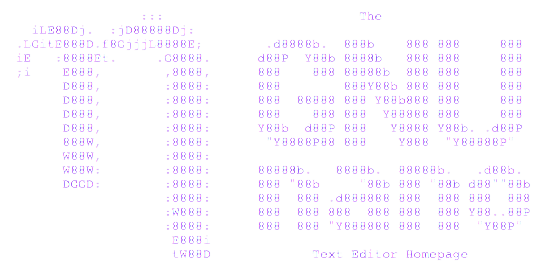
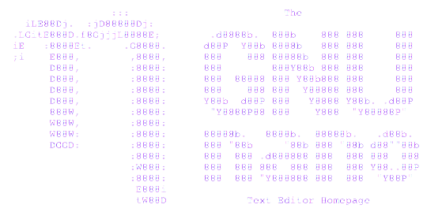
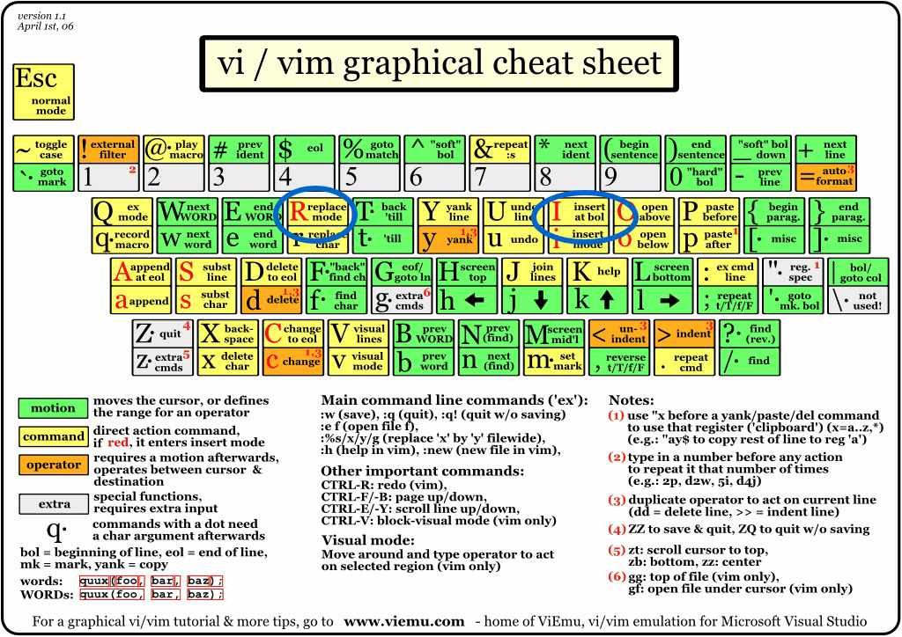
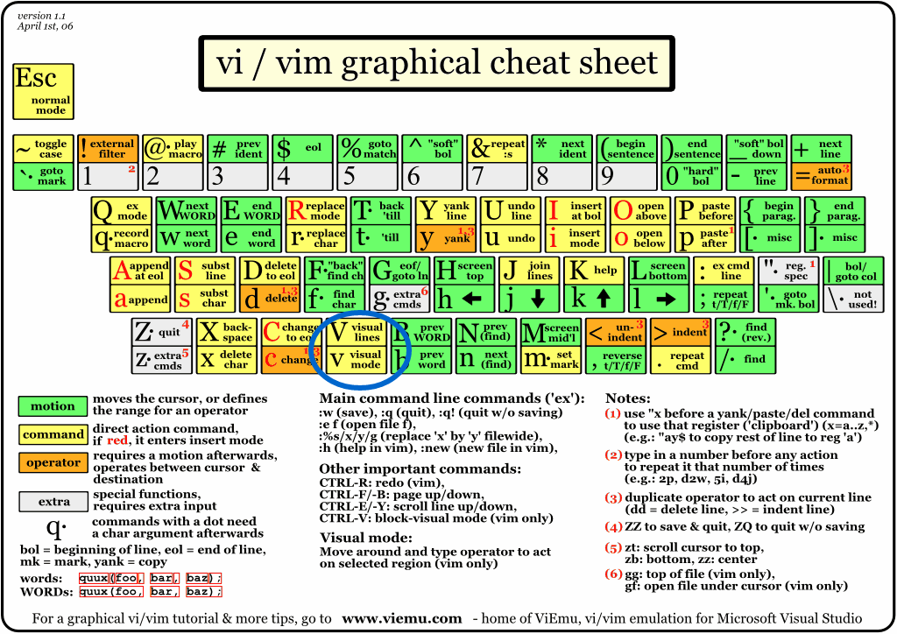
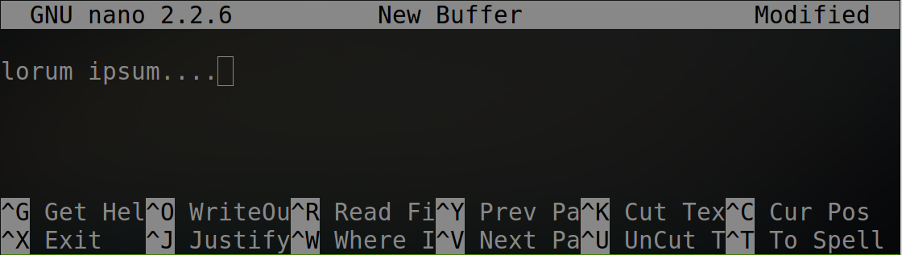

Command Line Basics
Summet 2014
About Me
- Name:
- Josh Beauregard
- Work:
- Knectar
- Title:
- Drupal Orented DevOps
- Twitter:
- sanguisdev
- IRC:
- sanguisdex
What is the Terminal?
The terminal is an interface with the operating systam at its most simple level.Unix Philosophy
"Write programs that do one thing and do it well. Write programs to work together. Write programs to handle text streams, because that is a universal interface." - Doug McIlroy
The Basics
The Basics
Getting help
The Basics
Getting help
Read the manual
man (manual)
example: man man
The Basics
Flags
options that can be run with a command.
Flags start with - or --The Basics
Flags
-fdacds
--location --name
-x true -v fales --dir foobar
The Basics
Operators
~ home
/ root
. Current directory
.. Parent directory
The Basics
Movement
cd (change directory)
Defaults to home
CRUDing
Create
Read
Update
Delete
cRud
Reading the file system
ls, list
Defaults to current directory
ls, list
sample output
authorize.php install.php robots.txt
CHANGELOG.txt INSTALL.sqlite.txt scripts
COPYRIGHT.txt INSTALL.txt sites
cron.php LICENSE.txt themes
includes MAINTAINERS.txt update.php
index.html misc UPGRADE.txt
index.php modules web.config
INSTALL.mysql.txt profiles xmlrpc.php
INSTALL.pgsql.txt README.txt
ls
-l, Long format
Use a long listing format
total 244
drwxr-xr-x 3 knectar knectar 4096 Jan 4 2013 cache
drwxr-xr-x 3 knectar knectar 4096 Nov 13 2012 entry
drwxr-xr-x 3 knectar knectar 4096 Nov 13 2012 includes
-rw-r--r-- 1 knectar knectar 3259 Jan 4 2013 index.php
drwxr-xr-x 4 knectar knectar 4096 Nov 13 2012 misc
drwxr-xr-x 15 knectar knectar 4096 Nov 13 2012 modules
-rw-r--r-- 1 knectar knectar 720 Nov 13 2012 robots.txt
drwxr-xr-x 5 knectar knectar 4096 Nov 13 2012 sites
drwxr-xr-x 4 knectar knectar 4096 Nov 13 2012 themes
ls, list
-l, Long format
total 244
-rw-r--r-- 1 knectar knectar 3259 Jan 4 2013 index.php
ls, list
-a, --all
Do not ignore entries starting with .
ls, list
-a, --all
. index.php profiles .. INSTALL.mysql.txt README.txt INSTALL.mysql.txt README.txt authorize.php INSTALL.pgsql.txt robots.txt CHANGELOG.txt install.php scripts COPYRIGHT.txt INSTALL.sqlite.txt sites cron.php INSTALL.txt themes .gitignore LICENSE.txt update.php .htaccess MAINTAINERS.txt UPGRADE.txt includes misc web.config index.html modules xmlrpc.php
What does a dot have to do with anything?
.Dot .files
Dot files are hidden files on a Unix file system.
- generally settings files
- or application data
- Works like the Windows registry.
cRud
Reading files
more or less
Crud
Creating Things
mkdir
Creating directories
mkdir foo
mkdir --help
Usage: mkdir [OPTION]... DIRECTORY...
Create the DIRECTORY(ies), if they do not already exist.
Mandatory arguments to long options are mandatory for short options too.
-m, --mode=MODE set file mode (as in chmod), not a=rwx - umask
-p, --parents no error if existing, make parent directories as needed
-v, --verbose print a message for each created directory
-Z, --context=CTX set the SELinux security context of each created
directory to CTX
--help display this help and exit
--version output version information and exit
Crud
touch
mkdir foobar_file
crUd
Editing/updating
crUd
mv, move
(used for moving files and folders another location. Commonly used for renaming a folder)
crUd
mv, move
mv foo.txt ~/Documents/bar.txtcp foo.txt ~/Documents/bar.txt
Updating files
 & 
& 
Using  (basics)
(basics)
Normal mode

http://www.viemu.com/vi-vim-cheat-sheet.gif
Insert modes
Visual mode
(the most of the movement and edit functions will work well but I want to mention Y for yank and D for delete, but it will also serve as a Cut function. You can P to paste the deleted or yanked string.)
common commands
- :w write file
- :q quit
- :help
Basics
cruD
Deleting Things
rm
all you need to delete everything. This is the really real world, their aint no coming back. (there is no recycling bin here recovering files can be extremely difficult)
(again the the --help flag output is to long for a slide but we will cover the ones I use the most)
-f, --force
rm -f file (forces the deletion of the file. With out it it will give you an are you sure prompt)
-d, --dir
rm -d directory
(deletes an empty directory) (to delete a populated directory you will need to combine the two above flags.)
Shell flavors
A shell is the interface that is presented to the user of the command line. They provide goodies like
- history
- auto completion
- custom settings
By default almost every one will be using a shell called BASH.
(BASH version one was released in 1989, version 4.7 was pleased this past Feb)
(In the last few years a newer shell has been becoming more popular called Zshel) (Zshel take all of peoples fav things of about bash and improves on it)
Using system variables and intro to the bash profile
Powering up your terminal: Using Zshel
Prettyfing your terminal with themes and colors
Any other stuff to do with a terminal
</section>
<section>
<section>
The Basics
</section>
Learning to create folders
Creating files
Using Vim (basics)
Deleting files
Deleting folders
Using system variables and intro to the bash profile
Powering up your terminal: Using Zshel
Prettyfing your terminal with themes and colors
Any other stuff to do with a terminal
Contact Me
- Name:
- Josh Beauregard
- Work:
- Knectar
- Twitter:
- sanguisdev
- IRC:
- sanguisdex